Vectors and the Geometry of SpaceVectors and ...
Support
Vectors and the Geometry of Space
Geometry of the 3D space
To specify a point in a plane, two numbers are required.
Any point in the plane can be represented as an
ordered
pair \((a_1,a_2)\) of real numbers, where \(a_1\) is the
x-coordinate and \(a_2\) is the
y-coordinate. Because of this, a plane is
referred to as two-dimensional.
To specify a point in space, three numbers are needed.
A point in space is represented by an ordered triple
\((a_1, a_2, a_3)\) of real numbers. To define a coordinate
system in space, we begin by selecting a fixed point
\(O\) (the origin) and three mutually perpendicular directed
lines passing through \(O\). These lines, known as
the coordinate axes, are labeled as the \(x\)-axis,
\(y\)-axis, and \(z\)-axis. Typically, the \(x\)- and
\(y\)-axes are considered horizontal,
while the \(z\)-axis is vertical. The
orientation of these axes is illustrated in Figure 1.
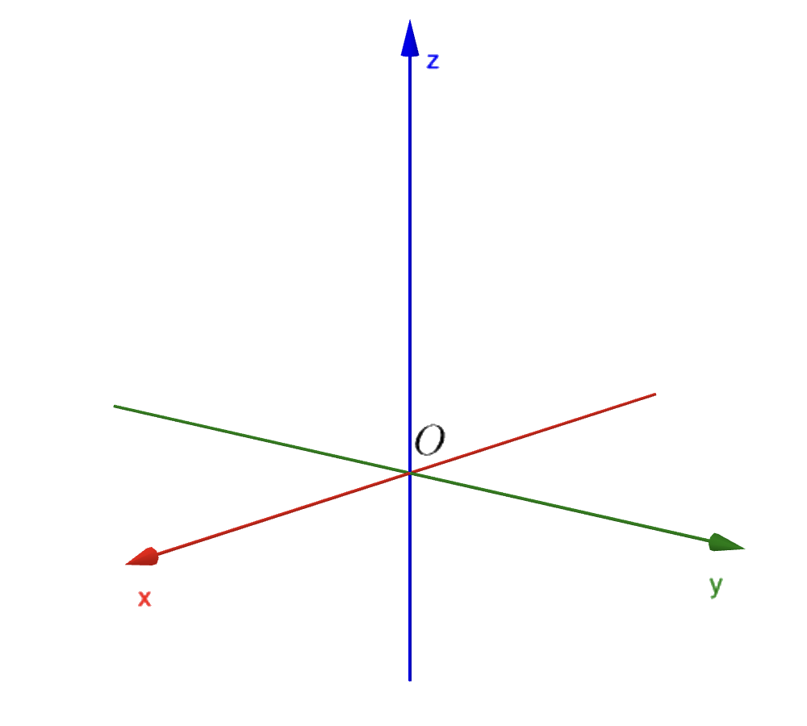
3D coordinate system.
The three coordinate axes define three coordinate
planes, depicted in Figure 2. The \(xy\)-plane
contains the
\(x\)- and \(y\)-axes, the \(yz\)-plane contains
the \(y\)- and \(z\)-axes, and the \(xz\)-plane
contains the
\(x\)- and \(z\)-axes. These three planes divide
space into eight regions, known as octants. The first octant,
which appears in the foreground, is determined by
the positive directions of the coordinate axes.
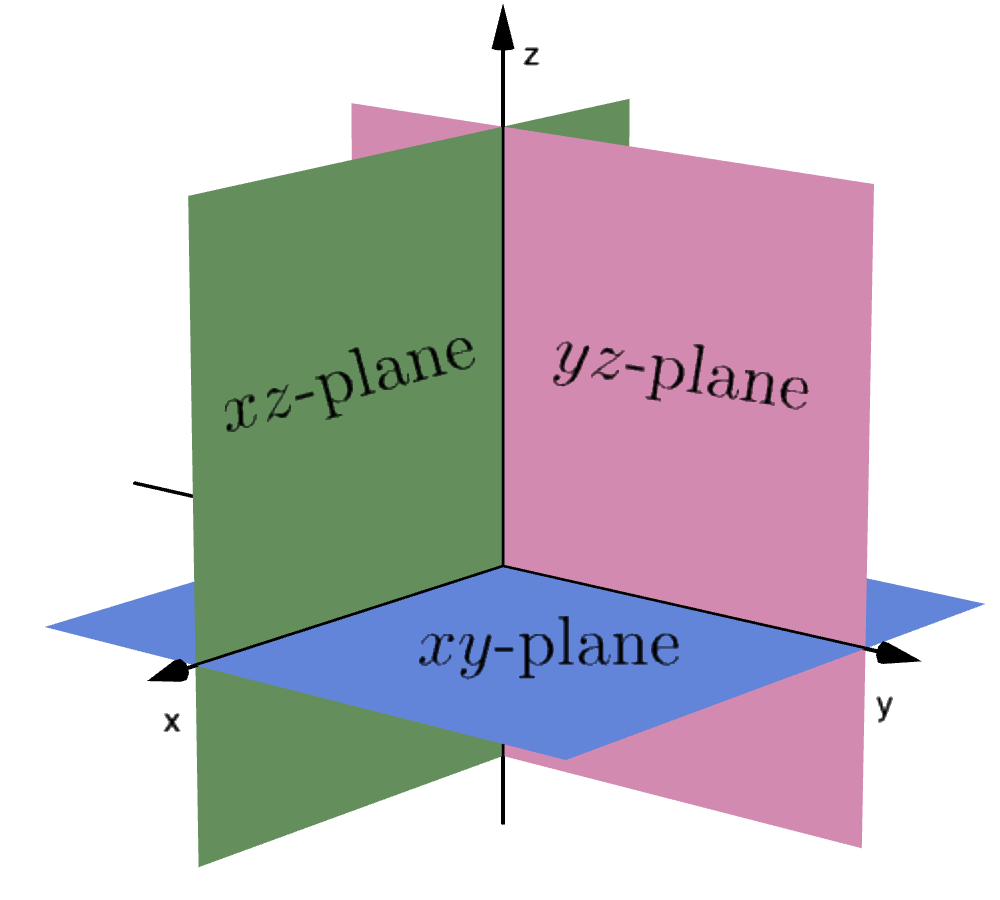
Three planes divide space into eight regions.
Now if $P$ is any point in space, let $a_1$ be the (directed)
distance from the $yz$-plane to $P,$
let $a_2$ be the distance from the $xz$-plane to $P,$
and let $a_3$ be the distance from the $xy$-plane to
$P.$ We represent the point $P$ by the ordered triple
$(a_1,a_2,a_3)$ of real numbers and we call
$a_1,$ $a_2,$ and $a_3$ the coordinates of $P.$
We say that $a_1$ is the
$x$-coordinate, $a_2$ is the $y$-coordinate, and $a_3$
is the $z$-coordinate. Thus, to locate
the point $(a_1,a_2,a_3)$
we can start at the origin $O$ and move
$a_1$ units along the $x$-axis, then $a_2$
units parallel to the y-axis, and then
$a_3$ units parallel to the
$z$-axis as in Figure 3.
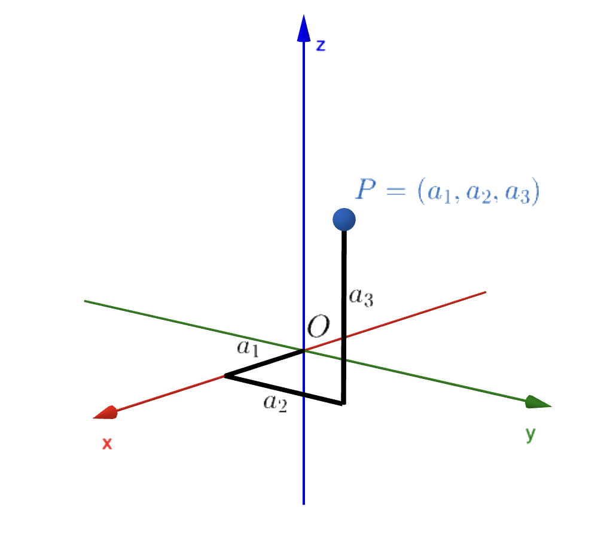
Point $P=(a_1,a_2,a_3).$
The point $P=(a_1,a_2,a_3)$ determines a rectangular box.
If we drop a perpendicular
from $P$ to the $xy$-plane, we get a point $Q$
with coordinates $Q=(a_1,a_2,0)$ called the projection
of $P$ onto the $xy$-plane. Similarly, $R=(0,a_2,a_3)$
and $S=(a_1,0,a_3)$ are the projections of
$P$ onto the $yz$-plane and $xz$-plane, respectively.
We will use the following notation for the line, the plane and
the three-dimensional space:
The real number line is denoted $\R^1,$ or simply $\R.$
The set of all ordered pairs $(x,y)$ of real numbers is denoted $\R^2.$
The set of all ordered triplets $(x,y,z)$ of real numbers is denoted $\R^3.$
We can also use the notation $\R^n,$ where $n=1,$ $2,$ or $3.$
Later we will also study $\R^n$ for $n=4,5,6,\ldots,$
but the cases $n=1,2,3$ are closest to our geometric intuition.
Addition and Scalar Multiplication
We are already familiar with addition of real numbers.
This idea extends naturally to \(\mathbb{R}^2\) and
\(\mathbb{R}^3.\) In \(\mathbb{R}^3,\) given two
triples \((a_1, a_2, a_3)\) and \((b_1, b_2, b_3),\)
their sum is defined as:
The element \((0, 0, 0)\) is known as the zero element
(or simply zero) of \(\mathbb{R}^3.\)
The element
\((-a_1, -a_2, -a_3)\) is called the additive inverse
(or negative) of \((a_1, a_2, a_3),\)
and we denote
subtraction as:
The additive inverse, when summed with the vector itself,
naturally results in the zero element:
\[
(a_1, a_2, a_3) + (-a_1, -a_2, -a_3) = (0,0,0).
\]
In \(\R^3\), several important product
operations can be defined. One such operation is
scalar multiplication, where the
term "scalar" refers to a real number. This operation
combines scalars and elements of \(\R^3\)
(ordered triples) to produce new elements in
\(\R^3\).
Given a scalar \(k\) and a triple
\((a_1, a_2, a_3)\), the scalar multiple is defined as:
Now, in $\R^3$ there are several important product operations
that we can define. One of them is called
scalar multiplication. This product
combines scalars (real numbers) and elements of
$\R^3$ (ordered triples) to yield elements of
$\R^3$ as follows: Given a scalar $s$
and a triple $(a_1, a_2, a_3),$ we
define the scalar multiple by
\[
s(a_1, a_2, a_3) = (s\,a_2,s\,a_2,s\,a_3).
\]
The set $\R^3,$ together with the operations of addition
and scalar multiplication
of triples, is known a vector space satisfying
the following properties:
In the case of $\R^2,$ addition and scalar multiplication
can be defined in a similar way as in $\R^3,$
with the third component of each vector
dropped off. And all the properties mentioned previously
still hold.
The Geometry of Vectors
The term vector is used
in different scientific
contexts to
indicate a quantity (such as
displacement or
velocity or force)
that has both magnitude
and direction.
A vector is often represented by
an arrow or a directed line segment.
The length of the arrow represents the magnitude of
the vector and the arrow points in the
direction of the vector.
There is one notable exception to vectors having
a direction: the
zero vector, denoted by boldface
\(\mathbf{0}\). This vector has zero length,
meaning it does not point
in any specific direction. Since there
is only one vector with zero length,
we refer to it as the zero vector.
Now, assume that a particle moves along a line segment
from point $A$ to point $B.$ The
corresponding displacement vector
\(\mathbf u,\)
shown in Figure 4, has
initial point $A$ (the tail) and terminal point
$B$ (the tip) and we indicate this by writing $\u = \overrightarrow{AB}.$
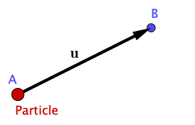
Displacement of a particle from point $A$ to point $B.$
By the way, in print, vectors are typically
denoted by boldface letters like
\(\mathbf{a},\)
while by hand, they are often written as
\(\vec{a},\)
sometimes with a line or wavy line underneath.
Suppose that a particle moves from point $A$ to $B,$
and then from $B$ to $C,$ with the displacement vectors
$\u$ and $\v;$ respectively.
The combined effect of these displacements
is that the particle has moved from $A$ to $C.$
The resulting displacement vector $\w = \overrightarrow{AC}$
is called the sum of $\u$ and $\v$
and we write
\[
\w= \u + \v
\]
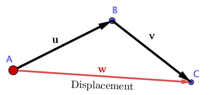
Displacement from $A$ to point $B,$
then from $B$ to $C.$
In the previous Figure you can see why the sum of two vectors
is called sometimes the Triangle Law.
Another geometric representation is known as the
Parallelogram Law. You can explore both in
the applet below:
It is possible to multiply a vector by a
scalar $s,$ a real number.
For instance, we want $3\u$ to be the same
vector as $\u+\u+\u$ which has the same direction as
$\u$ but is three times longer.
Here is a little challenge:
Given two vectors $\mathbf a$ and $\mathbf b,$
how do you represent
the vector $\mathbf b - \mathbf a$ geometrically, that
is, what is the geometry of vector subtraction?
Show solution.
Because $\mathbf a+(\mathbf b- \mathbf a)= \mathbf b,$
we see that $\mathbf b- \mathbf a$
is the vector that we add to $\mathbf a$ to
obtain $\mathbf b. $
So, we may conclude that $\mathbf b - \mathbf a$ is the
vector parallel to, and with the same magnitude as,
the directed line segment beginning
at the endpoint of $\mathbf a$
and terminating at the endpoint
of $\mathbf b$ when $\mathbf a$ and $\mathbf b$
begin at the same point. Does that make sense?
Algebraic Operations of Vectors
Components
After exploring the applets from the previous section,
you probably have already noticed that vectors can also be
represented algebraically using a coordinate system.
If we place the initial point of a vector $\mathbf a$
at the origin of a coordinate
system, then the terminal point of $\mathbf a$
has coordinates of the form $(a_1,a_2,a_3)$ or
$(a_1, a_2, a_3),$
depending on whether our coordinate system is two- or
three-dimensional.
These coordinates are called the
components
of $\mathbf a$ and we write
\[
\mathbf a = (a_1,a_2)\quad \text{or}\quad \mathbf a = (a_1,a_2,a_3).
\]
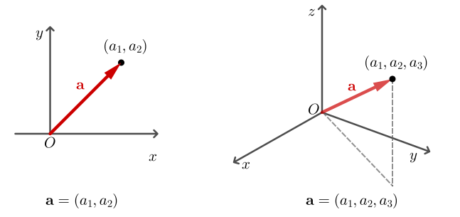
Vector represented algebraically with their components.
For this reason, the elements of $\R^2$ and $\R^3$ not only
are ordered pairs or triples of real numbers, but are
also regarded as vectors.
The pair $(0,0)$ and the triple $(0, 0, 0)$ are the zero
vectors of $\R^2$ and $\R^3;$ respectively, and they
are both denoted as $\mathbf 0.$
Two vectors $\mathbf a = (a_1, a_2)$ and
$\mathbf b= (b_1, b_2)$
are equal if and only if
$a_1 = b_1,$ and $a_2 = b_2$
(the same is true for vectors in $\R^3$).
Geometrically this
means that a and b have the same direction
and the same length, or magnitude.
This can be appreciated in the following applet.
The vector \(\mathbf{u}\) in the previous
applet is defined from the origin to point
\(A\) and is equal to all the other vectors
because they share the same components.
These vectors are considered equivalent,
even though they occupy different positions
on the plane. Ultimately, knowing a vector's
components allows us to determine its magnitude
and direction (which we will explore later).
However, in most cases, we will focus on
vectors whose initial point is at the origin.
Now we can introduce the definition of addition,
subtraction and scalar multiplication:
If
$\mathbf a = (a_1,a_2)$ and $\mathbf b = (b_1,b_2),$ then
\begin{eqnarray*}
\mathbf a + \mathbf b &=& (a_1,a_2) + (b_1,b_2) = (a_1+b_1, a_2+b_2),\\
\mathbf a - \mathbf b &=& (a_1,a_2) - (b_1,b_2) = (a_1-b_1, a_2-b_2),\\
s\, \mathbf a &= &(s\,a_1,s\,a_2)\quad (s\text{ is a scalar})
\end{eqnarray*}
Similarly, for vectors in $\R^3,$
\begin{eqnarray*}
\mathbf a + \mathbf b &=& (a_1,a_2,a_3) + (b_1,b_2,b_3) = (a_1+b_1, a_2+b_2, a_3+b_3),\\
\mathbf a - \mathbf b &=& (a_1,a_2,a_3) - (b_1,b_2,b_3) = (a_1-b_1, a_2-b_2, a_3+b_3),\\
s\, \mathbf a &= &(s\,a_1,s\,a_2,s\,a_3)\quad (s\text{ is a scalar})
\end{eqnarray*}
The Standard Basis Vectors
To describe vectors in space, it is convenient
to introduce three special vectors along
the $x,$ $y,$ and $z$ axes:
The vectors $\i,$ $\j,$ and $\k$ are called the
standard basis vectors.
In the plane we have the
standard basis $\i$ and $\j$ with components
$(1, 0)$ and $(0, 1),$ respectively.
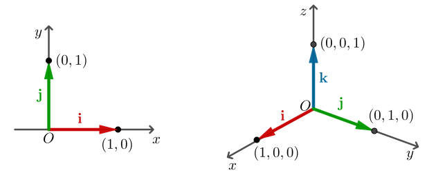
The standard basis in $\R^2$ and $\R^3.$
Let $\mathbf a$ be any vector, and let
$(a_1, a_2, a_3) $ be its components. Then
\[
\mathbf a = a_1\,\i+a_2\,\j +a_3\k,
\]
because the right-hand side is given in components by
Sometimes it will be useful to assign a vector to a pair
of points in the plane or space. Given two points $P$ and
$P',$ we can draw the vector $\v$ with tail $P$ and head $P',$
where $\v = \overrightarrow{PP'}.$ If $P = (x,y,z)$ and
$P'=(x',y',z'),$ then the vectors from the origin
$P$ and $P'$ are $\mathbf a = x\,\i+ y\,\j + z\,\k$
and $\mathbf a' = x'\,\i+ y'\,\j + z'\,\k,$ respectively.
Thus the vector $\overrightarrow{PP'}$ is the difference
\[
\mathbf a' - \mathbf a = (x'-x)\i+ (y'-y)\j+(z'-z)\k.
\]
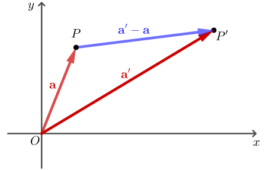
Vector joining two points.
Consider the points $P=(3,5)$ and $Q=(4,7).$
To determine the components of the vector
from $P$ to $Q$ we subtract
\[
(4,7) - (3,5) = (1,2).
\]
Thus, we obtain the vector $\mathbf v = \overrightarrow{PQ} = (1,2).$
The Dot Product
So far, we have explored adding two vectors
and multiplying a vector by a scalar. This
naturally leads to the question: can two
vectors be multiplied in a way that produces
a meaningful result? One such operation is
the dot product, which we define
next. Another is the cross product,
which will be covered later in this chapter.
If $\mathbf a= (a_1,a_2,a_3)$ and $\mathbf b= (b_1,b_2,b_3),$
then the dot product of $\mathbf a$ and
$\mathbf b$ the the number $\mathbf a \pd \mathbf b $ given by
\[
\mathbf a \pd \mathbf b = a_1b_1 + a_2b_2 + a_3b_3.
\]
To compute the dot product of \(\mathbf{a}\)
and \(\mathbf{b}\), we multiply their
corresponding components and
sum the results. The outcome is not a vector
but a real number, a scalar. Because of this,
the dot product is
also known as the scalar product
(or inner product). While
Definition 2 applies to
three-dimensional vectors, the dot
product is defined similarly for two-dimensional vectors:
\[
\mathbf a \pd \mathbf b = a_1b_1 + a_2b_2 .
\]
Sometimes the dot product is denoted as
$\langle \mathbf a, \mathbf b\rangle$ thus,
$\langle \mathbf a, \mathbf b\rangle$
and $\mathbf a \pd \mathbf b$ mean exactly
the same thing.
Some properties of the dot product follow directly
from the definition. If $\mathbf a,$ $\mathbf b,$
and $\mathbf c$ are vectors in $\R^3$ and $s,t$ are real
numbers, then
$\mathbf a \pd \mathbf a\geq 0;$
$\mathbf a\pd \mathbf a = 0$ if and only if $\mathbf a=\mathbf 0.$
$s\,\mathbf a \pd \mathbf b = s(\mathbf a\pd \mathbf b)$ and $\mathbf a\pd t\, \mathbf b = t(\mathbf a\pd
\mathbf b).$
$\mathbf a\pd (\mathbf b+ \mathbf c) = \mathbf a \pd \mathbf b + \mathbf a\pd \mathbf c$ and $(\mathbf
a+\mathbf b)\pd \mathbf c = \mathbf a\pd \mathbf c + \mathbf b \pd \mathbf c.$
$\mathbf a\pd \mathbf b = \mathbf b\pd \mathbf a.$
Length of a Vector
Now, using the Pythagorean Theorem, we can define the
length of any vector.
The length or
magnitude of a two-dimensional vector
$\mathbf a = (a_1,a_2)$ is
\[
\norm{\mathbf a} = \sqrt{a_1^2+a_2^2}
\]
The length of a three-dimensional vector
$\mathbf a = (a_1,a_2, a_3)$ is
\[
\norm{\mathbf a} = \sqrt{a_1^2+a_2^2+a_3^2}.
\]
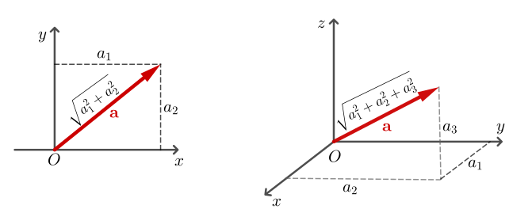
The length of a vector in $\R^2$ and $\R^3.$
The quantity $\norm{\mathbf a}$ is often
called the norm of
$\mathbf a,$ and because
$\mathbf a \pd \mathbf a = a_1^2+a_2^2+a_3^2$
it follows that
\[
\norm{\mathbf a} = (\mathbf a \pd \mathbf a )^{1/2}.
\]
Vectors with norm 1 are called unit vectors.
For instance, the vectors $\i,$ $\j,$ $\k$ are unit
vectors. Note that for any nonzero vector
\[
\frac{\mathbf a}{\norm{\mathbf a} }
\]
is a unit vector. When we divide
$\mathbf a$ by $\norm{\mathbf a} ,$
we say that we have normalized $\mathbf a.$
Consider the vector $\v = 2\,\i + 3\, \j -\frac{1}{2}\k.$
To normalized $\v,$ first we need to find its length.
That is,
If $\mathbf a$ and $\mathbf b$ are vectors,
the vector $\mathbf b - \mathbf a$ is parallel
to and has the same
magnitude as the directed line segment from
the endpoint of $\mathbf a$ to the endpoint of
$\mathbf b.$
It follows that the distance from the
endpoint of $\mathbf a$ to the endpoint of $\mathbf b$ is
$\norm{\mathbf a -\mathbf b}.$
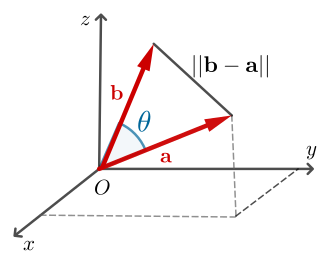
The distance $\norm{\mathbf a -\mathbf b}$ from the
endpoint of $\mathbf a$ to the endpoint of $\mathbf b,$
and the angle between them the two vectors.
Let's compute the distance from the endpoint of the
vector $\j$ that is, the point
$(0, 1, 0),$ to the
endpoint of the vector $\k,$ that is, the point $(0, 0, 1).$
That is,
Now, suppose we have two vectors $\mathbf a$ and
$\mathbf b$ in $\R^3$ and we wish to determine
the angle between them, that is, the smaller angle
subtended by a and b in the plane
that they span. The dot product enables us to do
this.
Let $\mathbf a$ and $\mathbf b$ be two vectors in
$\R^3$ and
let $\theta,$ with $0 \leq \theta \leq \pi,$ be
the angle between them. Then
\[
\mathbf a \pd \mathbf b = \norm{\mathbf a}\norm{\mathbf b}\cos \theta.
\]
Considering the
diagram shown in Figure 10
we can apply the law of cosines from trigonometry
to the triangle with one
vertex at the origin and adjacent sides determined
by the vectors $\mathbf a$ and $\mathbf b.$
$\norm{\mathbf a}^2 = \mathbf a\pd \mathbf a,$
and $\norm{\mathbf b}^2 = \mathbf b\pd \mathbf b,$ we
have
\begin{eqnarray}\label{eq-01}
(\mathbf b-\mathbf a)\pd (\mathbf b-\mathbf a) =\mathbf a\pd \mathbf a \pd \mathbf b\pd \mathbf b - 2
\norm{\mathbf a}\norm{\mathbf b}\cos\theta .
\end{eqnarray}
We obtain
\begin{eqnarray*}
(\mathbf b-\mathbf a)\pd (\mathbf b-\mathbf a) &=& \mathbf b\pd (\mathbf b-\mathbf a) -\mathbf a\pd (\mathbf
b-\mathbf a)\\
&=& \mathbf b \pd \mathbf b - \mathbf b\pd \mathbf a - \mathbf a\pd\mathbf b + \mathbf a\pd \mathbf a\\
&=& \mathbf a \pd \mathbf a + \mathbf b \pd \mathbf b - 2\mathbf a \pd \mathbf b.
\end{eqnarray*}
Thus, substituting in (\ref{eq-01}), we get
\begin{eqnarray*}
\mathbf a \pd \mathbf a + \mathbf b \pd \mathbf b - 2\mathbf a \pd \mathbf b &=& \mathbf a\pd \mathbf a \pd
\mathbf b\pd \mathbf b - 2 \norm{\mathbf a}\norm{\mathbf b}\cos\theta .
\end{eqnarray*}
Hence
\begin{eqnarray*}
\mathbf a \pd \mathbf b &=& \norm{\mathbf a}\norm{\mathbf b}\cos\theta .
\end{eqnarray*}
An immediate consequence from equation
$\mathbf a \pd \mathbf b = \norm{\mathbf a}\norm{\mathbf b}\cos \theta,$
is that if $\mathbf a$ and $\mathbf b$ are nonzero,
we can express the angle between them as
\[
\theta = \cos^{-1}\left(\frac{\mathbf a \pd \mathbf b }{\norm{\mathbf a}\norm{\mathbf b}}\right).
\]
To find the angle between $\u = (2,2,-1)$ and
$\v = (5,-3,2), $ first we have
If \(\mathbf{a}\) and \(\mathbf{b}\) are nonzero
vectors in \(\mathbb{R}^3\) and \(\theta\)
is the angle between them, then
\(\mathbf{a} \cdot \mathbf{b} = 0\) if and
only if \(\cos \theta = 0.\) This means that
the inner product of two nonzero vectors
is zero if and only if the vectors are perpendicular.
As a result, the inner product provides
a useful method for determining whether
two vectors are perpendicular. In such cases,
we often say the vectors are orthogonal.
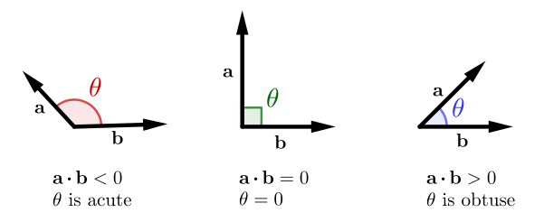
The nonzero vectors $\mathbf{a}$ and $\mathbf{b}$ are orthogonal when $\mathbf{a} \cdot \mathbf{b} = 0.$
The standard basis vectors
\(\mathbf{i},\) \(\mathbf{j},\)
and \(\mathbf{k}\) are mutually orthogonal
and have a length of 1; any such system is
called orthonormal.
By convention, we consider the zero vector
to be orthogonal to all vectors.
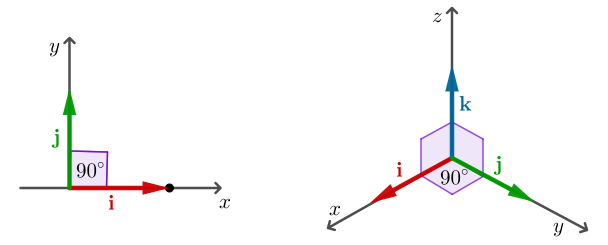
The orthonormal basis in $\R^2$ and $\R^3$
Theorem 1 establishes that the inner
product of two vectors equals the product
of their lengths multiplied by
the cosine of the angle between them.
This relationship is particularly useful
in solving geometric problems.
One important consequence of Theorem 1 is:
(Cauchy-Schwarz Inequality)
For any two vectors $\mathbf a$ and $\mathbf b,$
we have
\[
|\mathbf a \pd \mathbf b|\leq \norm{\mathbf a }\norm{\mathbf b}
\]
with equality holds if and only if $\mathbf a $ is a scalar
multiple of $\mathbf b,$ or one of them is the vector $\mathbf 0.$
If \(\mathbf{a}\) is not a scalar multiple of
\(\mathbf{b},\) then the angle \(\theta\) between
them is neither \(0\) nor \(\pi\). In this case,
\(|\cos \theta| \lt 1\), ensuring that the inequality
holds. Moreover, if both \(\mathbf{a}\) and \(\mathbf{b}\)
are nonzero, the inequality is strict.
However, if \(\mathbf{a}\) is a scalar multiple of
\(\mathbf{b},\) then \(\theta = 0\) or \(\pi\),
which implies \(|\cos \theta| = 1\), leading to equality in this
case.
Let \(\mathbf{u} = (-1, 1, 1)\) and \(\mathbf{v} = (3, 0, 1)\).
We want to verify the Cauchy-Schwarz
inequality:
Step 1: Compute the dot product \(\mathbf{u} \cdot \mathbf{v}\):
\[
\mathbf{u} \pd \mathbf{v} = -3+0+1 = -2
\]
Step 2: Compute the magnitudes \(||\mathbf{u}||\) and \(||\mathbf{v}||\):
Since \(\sqrt{3}\cdot \sqrt{10}\gt \sqrt{3}\cdot \sqrt{3} = 3 \geq 2\),
the Cauchy-Schwarz inequality is satisfied.
The Triangle Inequality
A key consequence of the Cauchy-Schwarz inequality,
known as the triangle inequality,
establishes a
relationship between the lengths of the vectors
\(\mathbf{a}\) and \(\mathbf{b}\) and their sum,
\(\mathbf{a} +
\mathbf{b}.\) Geometrically, the triangle
inequality states that the length of any side
of a triangle is always
less than or equal to the sum of the lengths
of the other two sides.
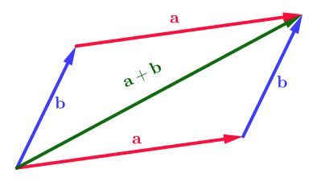
A geometric representation of the triangle inequality.
Triangle Inequality
For vectors $\mathbf a$ and $\mathbf b$ in space,
Earlier, we introduced a vector product
that results in a scalar. In this section,
we will define a different
type of vector product that yields another
vector. Specifically, given two vectors
$\mathbf{a}$ and $\mathbf{b},$ we
can compute a third vector,
$\mathbf{a} \times \mathbf{b},$ known as
the cross product. This new vector has a
key geometric property: it is
perpendicular to the plane defined by
$\mathbf{a}$ and $\mathbf{b}.$ The definition
of the cross product is closely tied to the
concepts of matrices
and determinants.
If $\mathbf{a}= a_1\i+a_2\k+a_3\k$ and $\mathbf{b}= b_1\i+b_2\k+b_3\k$
are vectors in $\R^3,$ the cross product
or vector product of $\mathbf{a}$ and $\mathbf{b},$
denoted by $\mathbf{a} \times \mathbf{b},$ is defined as the
vector
The cross product was introduced by the
Irish mathematician Sir
William Rowan Hamilton
(1805-1865), who developed quaternions, an
early precursor to vectors. Hamilton was a
linguistic prodigy —by the age of five, he could
read Latin, Greek, and Hebrew. By eight, he had
added French and Italian, and by ten, he could
read Arabic and Sanskrit. Remarkably, at just 21
years old, while still an undergraduate at
Trinity College in Dublin, he was appointed
Professor of Astronomy at the university and
Royal Astronomer of Ireland.
It is important to note that the cross product
$\mathbf{a} \times \mathbf{b}$ is only defined for three-dimensional vectors.
To simplify the computation of the cross product, we make use of determinant notation.
A determinant of order 2 is defined as:
\[
\begin{vmatrix} a & b \\ c & d \end{vmatrix} = ad - bc
\]
(Multiply the elements along the main diagonal and subtract the product of the elements along the other
diagonal.)
For example:
A determinant of order 3 extends this idea by expressing it in terms of second-order
determinants,
also known as minors. Given a $3 \times 3$ matrix:
\[
\begin{vmatrix}
a & b & c \\
d & e & f \\
g & h & i
\end{vmatrix} =
a \begin{vmatrix} e & f \\ h & i \end{vmatrix}
- b \begin{vmatrix} d & f \\ g & i \end{vmatrix}
+ c \begin{vmatrix} d & e \\ g & h \end{vmatrix}.
\]
This determinant formula will be useful in defining and computing the cross product
of two vectors in $\mathbb{R}^3$.
Note that $\mathbf{a} \times \mathbf{b}$ is
defined only when a and b are three-dimensional vectors.
In order to make Definition 4 easier to remember,
we use the notation of determinants.
A determinant of order 2 is defined by
(Multiply across the diagonals and subtract.) For example,
A determinant of order 3 can be defined in terms of
second-order determinants as
follows:
Therefore, the cross product is \( \mathbf{a} \times \mathbf{b} = (-43, 13, 1) \).
As mentioned before, the vector $\mathbf a \times \mathbf b$
is perpendicular to the plane defined by
$\mathbf{a}$ and $\mathbf{b}.$ This means that
$\mathbf a \times \mathbf b$ is orthogonal to
$\mathbf{a}$ and $\mathbf{b}.$ For example
Using a similar procedure we find that $ (\mathbf a \times \mathbf b) \pd \mathbf b = 0.$
Therefore, we just proved the following:
The vector $\mathbf a \times \mathbf b$ is orthogonal to both $\mathbf{a}$ and $\mathbf{b}.$
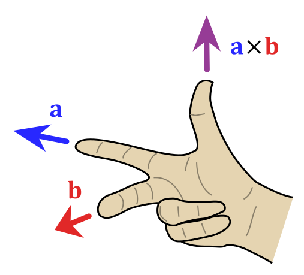
It turns out that the direction of
$\mathbf a \times \mathbf b$ is
given by the right-hand rule:
if the fingers
of your right hand curl in the direction of
a rotation (through an angle less than 180°)
from $\mathbf a $ to $\mathbf b,$
then your thumb points in the
direction of $\mathbf a \times \mathbf b.$
In the previous argument we used the cross product
and the dot product. This operation has a particular name.
Given three vectors
$\u,$ $\v,$ and $\w$ the real number
\[
(\u \times \v) \pd \w
\]
is called the triple product
of $\u,$ $\v,$ and $\w,$ in that order.
Now that we know the direction of the
vector $\mathbf a \times \mathbf b$
the remaining thing we need to
complete its geometric description is its length
$\norm{\mathbf a \times \mathbf b}.$
Let's calculate the length of $\mathbf a \times \mathbf b.$
First, note that
You can explore the geometric visualization of the cross product
of the vectors $\u$ and $\v$ in the space in the following
applet. Drag the points on the 2D view to change the $x$ and $y$
components. To change the $z$ components use the sliders or input
boxes. The vector $\u \times \v$ is displayed in the 3D view.
If we apply Theorems 3 and 4 to the standard
basis vectors $\i,$ $\j,$ and $\k$ using $\theta = \pi/2,$
we obtain
Now it is time for you to practice.
Prove all the other properties. Have fun!
Some Applications of Vectors
Theoretical applications in mathematics and
physics often rely heavily on vectors. In mathematics,
vectors are a cornerstone of
linear algebra,
where
they represent elements in vector spaces, solutions
to systems of linear
equations, and transformations.
Vectors are also essential in
differential equations and
optimization, providing
a powerful way to model and solve problems in
a variety of contexts.
In physics, vectors describe
key quantities such as force, velocity, and
acceleration. They are crucial for
analyzing motion, equilibrium, and interactions
between objects. For example, in
collision theory,
vectors are used to represent the velocities of objects
before and after impact, allowing for the
calculation of momentum
and energy transfer. Vectors also play a role
in modeling
electromagnetic fields, where
they describe both the
strength and direction of forces acting on
charged particles.
Artificial Intelligence (AI)
also makes extensive use
of vectors. In machine learning, vectors
are used to
represent data points and features in high-dimensional
spaces. For example, each word in a word embedding (like
Word2Vec) is
represented as a vector, enabling
algorithms to understand relationships between
words.
Vectors are fundamental in training
neural networks,
where they are used to represent weights, biases,
and activations. In
reinforcement learning, vectors
are used to
encode states and actions, guiding the
decision-making process of AI
agents.
Another practical application of vectors is in
computer graphics and game development.
Vectors represent positions,
directions, and movements in 2D and 3D
spaces. For instance, in a video game,
a character's movement is
described
using a velocity vector, which determines
both the speed and direction
(see for example The Wizard Game). When forces
like gravity or collisions
occur, vector operations such as addition
and scalar multiplication help compute the resulting motion
realistically.
In the applet below, you can see how vectors
are used in a collision simulation,
where the direction and magnitude of
velocities, before and after the collision,
are calculated.